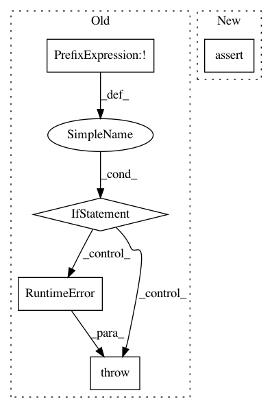

e2467c3667e4d52e208c019872b2bda8dc6b0a8e,scipy/signal/ltisys.py,,_YT_loop,#Any#Any#Any#Any#Any#Any#,1366
Before Change
Q, _ = s_qr(transfer_matrix_not_i_j, mode="full")
if np.isreal(poles[i]):
if not np.isreal(poles[j]):
msg = "mixing real and complex in YT_real" + str(poles)
raise RuntimeError(msg)
_YT_real(ker_pole, Q, transfer_matrix, i, j)
else:
if np.isreal(poles[j]):
msg = "mixing real and complex in YT_complex" + str(poles)
After Change
Q, _ = s_qr(transfer_matrix_not_i_j, mode="full")
if np.isreal(poles[i]):
assert np.isreal(poles[j]), "mixing real and complex " + \
"in YT_real" + str(poles)
_YT_real(ker_pole, Q, transfer_matrix, i, j)
else:
assert ~np.isreal(poles[i]), "mixing real and complex " + \
"in YT_real" + str(poles)
In pattern: SUPERPATTERN
Frequency: 5
Non-data size: 5
Instances
Project Name: scipy/scipy
Commit Name: e2467c3667e4d52e208c019872b2bda8dc6b0a8e
Time: 2015-03-14
Author: irvin.probst@ensta-bretagne.fr
File Name: scipy/signal/ltisys.py
Class Name:
Method Name: _YT_loop
Project Name: tensorflow/tpu
Commit Name: a5364c4875ddbe5d2150a2f822fa916428f29651
Time: 2018-04-27
Author: 1517779+sb2nov@users.noreply.github.com
File Name: models/official/resnet/resnet_main.py
Class Name:
Method Name: main
Project Name: stanford-mast/nn_dataflow
Commit Name: 6db583e50cc3c152b1937daff35607c5f637041f
Time: 2017-06-29
Author: mgao12@stanford.edu
File Name: nn_dataflow/MapStrategy.py
Class Name: MapStrategyEyeriss
Method Name: _repl_fold
Project Name: kmike/pymorphy2
Commit Name: 4a12371fa3d783771eb3865fe5c2316f5b21bf00
Time: 2013-04-02
Author: kmike84@gmail.com
File Name: pymorphy2/tagset.py
Class Name: OpencorporaTag
Method Name: grammeme_is_known
Project Name: kundajelab/deeplift
Commit Name: 0f8c0f3699946469a9f6a91be42ae7d6f819f09c
Time: 2016-07-22
Author: avanti.shrikumar@gmail.com
File Name: deeplift/util.py
Class Name:
Method Name: assert_is_type